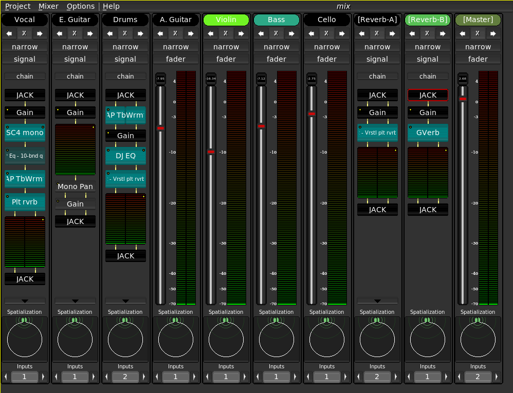
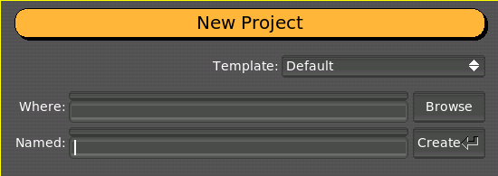
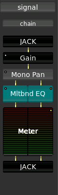
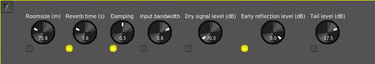

1. User Manual
1.1. The Mixer
|  |
The Non-Mixer is a stand-alone audio mixer, utilizing JACK as an audio subsystem. At the time of writing, the architecture of Non-Mixer is unique. By making the mixer stand-alone, concepts such as busses, sends, and inserts are eliminated, as the same goals can be achieved by simply adding more strips to the mixer.
Start by creating a new project.
|  |
1.1.1. Mixer Strip
 |
Each mixer strip has a name and color, each of which may be defined by the user. Names, but not colors, must be unique. In addition, each strip has controls to move it left or right (the arrows) in the display and to remove it entirely (the 'X').
Strips start out in narrow mode, with the fader view enabled. Click the desired button to toggle the mode or view.
The fader view comprises a large gain control and digital peak meter indicator. These are automatically connected to the default gain and meter modules of the strips signal chain.
To see how an audio signal traveling through this strip will be processed, switch to its signal view.
1.1.1.1. Signal Processing
1.1.1.1.1. Signal Chain
The signal chain view of a mixer strip provides a way to view and manipulate the signal processing of a mixer strip.
1.1.1.1.1.1. Modules
|  |
All signal processing in Non Mixer occurs in Modules. Modules are
Modules are displayed as named blocks. Some modules may have additional GUI components.
An indicator in the upper left-hand corner of each module block indicates whether the module has any parameters bound to controls.
Non Mixer has several built-in modules. They are:
- JACK
- Performs JACK I/O
- Gain
- Applies gain in dB
- Meter
- Digital Peak meter
- Mono Pan
- Performs intensity panning of a mono signal into a stereo signal.
- Plugin
- Hosts a LADSPA plugin
Left-clicking on a module brings up the Module Parameter Editor.
Shift+Left-clicking on a module brings up a menu which allows you to pick a new module to insert before this one in the chain.
Control+Right-clicking on a module causes it to be removed from the chain (modules added by default cannot be removed).
|  |
The Module Parameter Editor is used to alter the values of a module's parameters, and, further more, to bind its parameters to controls. A menu button in the upper left-hand corner allows you to select between knob, vertical slider and horizontal slider controls.
 |
 |
Underneath each control is a bind button. Clicking adds a new control to the chain's Controls view and binds it to the parameter in question. For simplicity, only one control at a time may be bound to a given parameter.
 |
| NOTE: All knob and slider controls respond to mousewheel events. Hold down the `Ctrl` key while scrolling the mousewheel to achieve finer resolution. |
The control voltage concept should be familiar to anyone who has experience with pre-MIDI hardware synthesizers designs. MIDI definitely has its advantages, but MIDI control data is multiplexed and connecting one MIDI control to a parameter usually involves configuring settings on both ends of the connection in order to separate the control data streams.
Control Voltages provide a simple 1:1 source to sink relationship and offer much higher resolution, both in time and value, than can be natively expressed through MIDI. The chief advantage of CV in the context of Non-DAW is the ease with which an control sequence can be connected to a mixer module parameter. If you have a MIDI controller that you'd like to use to control parameters of Non-Mixer, consider jm2cv, a JACK MIDI to Control Voltage daemon which was written by Peter Nelson specifically for use with Non-Mixer. jm2cv can be acquired by:
git clone git://fuzzle.org/jm2cv.git |
1.1.1.2. JACK I/O
Each mixer strip is presented as a separate JACK "client". This helps to avoid the necessity of internally duplicating JACK's routing logic and, with JACK2, permits the possibility of parallel execution of mixer strip signal chains.
The JACK client name of each strip will correspond to the name of the strip.
| NOTE: The JACK API makes implementing this far more difficult and kludgey than it should have to be. Please petition your local JACK developer to accept jack_client_set_name() into the API. |
 |